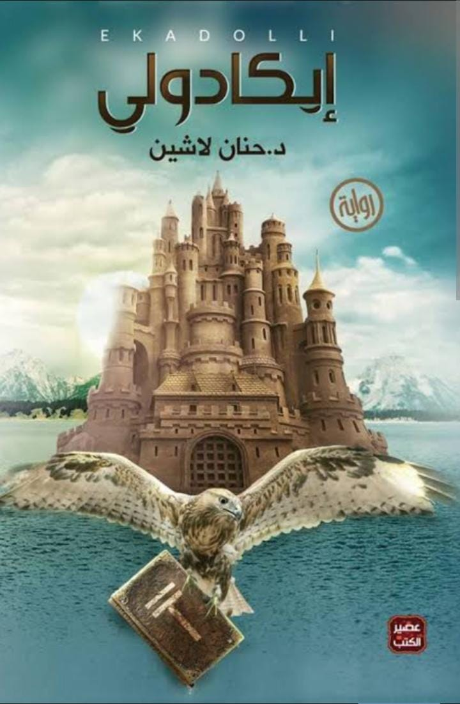

إيكادولي
بقلم د/ حنان لاشين
★
★
★
★
☆
4.5
نبذة عن الكتاب
إيكادولي هي رواية من ضمن الروايات الخيالية ،وهي الرواية الأولى من سلسلة مملكة
البلاغة التي أصدرتها الكاتبة ،وتعرض الكاتبة من خلالها صور الصراع القائم بين الخير
والشر، وتدور أحداث الرواية في زمن خيالي ومكان خيالي يسمى "مملكة البلاغة"، وهي
مكان اتصف بالغرابة وملئ بالمغامرات والغموض
نبذة عن الكاتب
كاتبة مصرية من مواليد 1971م ،وحاصلة على بكالوريوس الطب البيطري
من جامعة الإسكندرية.صدر لها 13 عمل منهم الكتب والروايات حتى آلان
وأشهرهم سداسية مملكة البلاغة، والهالة المقدسة ،وكوني صحابية ،وغيرهم من الأعمال
أعمال اخرى للكاتب
- كوني صحابية
- غزل البنات
- ممنوع الضحك
- منارات الحب
- الهالة المقدسة
- أوبال
- أمانوس
- كويكول
- سقطري
- سيروش
اشتري من هنا